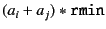
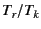

Next: libiter Parameters
Up: Hydrodynamic Interaction Parameters
Previous: Hydrodynamic Interaction Parameters
- version : (string) ``F,'' ``FT,'' or ``FTS.''
- flag-noHI : (bool)
#t for no hydrodynamic interaction,
that is, only the self term (Stokes drag),
#f with hydrodynamic interactions
- flag-mat: (bool)
#t for matrix scheme,
#f for atimes scheme
- flag-lub: (bool)
#t with lub,
#f without lub
- rmin : (double) parameter for mininum distance in
.
- lub-min: (double) minimum cutoff of distance for lubrication
- lub-max: (double) maximum cutoff of distance for lubrication
- periodic: (bool)
#t for periodic systems,
#f for open boundary systems
The following parameters are only for the periodic systems:
- ewald-tr: (double) time ratio  for Ewald summation
- ewald-eps: (double) cut-off limit for Ewald summation
- lattice: (list of doubles) size of the periodic box
(See Section 2.2 for the details.)
Kengo Ichiki 2008-10-12